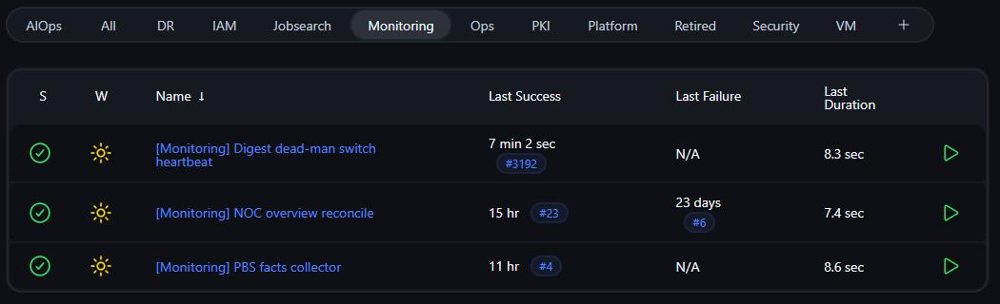

Monitoring the monitoring
Monitoring has a blind spot. If a nightly job crashes, or the thing that sends the alerts dies, nothing fires. Silence looks exactly like success. This lab closes that gap with dead-man switches: fake hosts in the monitoring system that expect a heartbeat on a schedule and raise an alarm when the heartbeat stops. This page covers the pattern, the one running in production today, and the second one that is built and waiting to be switched on.
The blind spot
Monitoring is built around events. A disk fills, a service stops responding, a certificate is about to expire, and an alert fires. That model works well and it hides one assumption: that something is still running to notice.
Consider a nightly job that emails a summary of every backup. If it works, mail arrives. If the job crashes at three in the morning, no mail arrives, and no alert fires either, because nothing went wrong in a way anything was watching. The next morning looks exactly like a quiet, healthy night. You can go weeks like that and only find out when you need one of those backups.
This is not hypothetical here. Building the recovery pipeline turned up several checks that were passing without actually testing anything, and the reason nobody noticed was that a check which silently does nothing and a check which passes look identical from the outside. That experience is why absence became a thing to alarm on rather than a thing to assume.
So the rule this page is about: every job that matters has to prove it ran, and the absence of that proof has to be loud.
How a dead-man switch works
Three small pieces, none of them clever on its own, and all three are built out of Zabbix, the monitoring system this lab runs.
The first is a Zabbix trapper item, which only holds what something pushes into it. Most Zabbix items work by going out and asking a machine a question every minute. A trapper item does the opposite: it sits empty until a job reaches in and drops a value, so it is a mailbox rather than a question.
The second is a Zabbix nodata trigger, using the built-in nodata() trigger function,
which fires on nothing arriving. Instead of "alert when this value is too high", it says "alert
when nothing has arrived here for longer than it should have". That is the switch. The job is not
reporting a problem, it is reporting that it is alive, and going quiet is the problem.
The third is a Zabbix host that does not exist. Zabbix organises everything under hosts, but nothing says a host has to be a real machine. A named bucket with no agent and no address behind it is enough to hang these items on, and it keeps them together and obvious instead of scattered across whichever real machine happened to run the job.
Put together: the job finishes, pushes a value, and the clock resets. If the job dies, stops being scheduled, or gets stuck halfway, nothing pushes, the clock runs out, and an alarm fires naming the job that went quiet.
The one that runs today
Jenkins runs three separate daily digests in this lab: a backup summary, an operations summary from the automated triage, and a summary from the job-search platform. Each has its own schedule, the earliest waking up around six in the morning and the last around one in the afternoon. They are the kind of thing that is easy to stop noticing, which makes them exactly the kind of thing that can stop arriving without anyone reacting.
Rather than have each digest push its own heartbeat, a separate Jenkins job checks in on all three roughly every fifteen minutes. It looks at how long it has been since each digest last completed and pushes that age into its own Zabbix trapper item, one per digest. That indirection is deliberate: it means the heartbeat mechanism itself can be watched for going quiet, not only the digests it is watching.

Each digest's item carries two nodata triggers, not one. A short one, around two hours, fires if the fifteen-minute checker itself stops pushing, which is the heartbeat mechanism going silent. A longer one, at thirty hours, fires if the age it is reporting gets too large, which is the digest itself actually missing a day. Splitting them this way means a stuck checker and an actually missed digest read as two different alarms instead of one ambiguous one.
The checker job and both trigger definitions are written and committed. Wiring them into the monitoring system so the alarms fire on their own is not done yet, the same as the checker further down this page.
A checker that is itself checked
The second switch goes a step past heartbeats, and it guards something more interesting than a job. The lab publishes a public operations dashboard that claims to describe what is monitored. A dashboard like that has a specific way of going wrong: it stays up, it stays green, and it gradually stops describing reality. Somebody edits a panel by hand, or a system it claims to watch is retired, and the board keeps looking authoritative while quietly becoming fiction.
The checker is a tool called noc-reconcile. Jenkins runs it once a night, around four in the morning. It rebuilds the dashboard's definition from the same tagged source files the dashboard is supposed to be generated from, then compares that rebuild against the live board field by field: every tile, every query, every link, every threshold and color step, the banner text, even dashboard-level settings like which variables are editable. It names the panel and the field that moved rather than just announcing that something moved, because "there is drift somewhere" is not something anyone can act on at eight in the morning.
Whatever it finds also gets pushed into its own Zabbix item, the same heartbeat shape as the digests above: a flag that goes up when there is drift, with a short summary of the first few differences attached, and a clean signal when the board matches. Two alarms watch that flag for drift being found. A third, set to fire after a bit over a day of silence, watches for the checker itself going quiet, because a drift detector that stops running reports no drift, which reads exactly like a board that is perfectly accurate. A checker that is itself checked.
Being straight about the state of this one: the checking job is built, tested, and has found real differences between what the board claimed and what it was supposed to say when run against the live board during development. Wiring it into the monitoring system so those three alarms fire on their own is the step that has not been done yet. It is on the list rather than on the wall.
The same pattern guarding recovery
The weekly test that destroys the secrets server and restores it from backup pushes its own heartbeat when it passes, and an alarm fires if those stop arriving. A recovery test that quietly stops running leaves you with the belief that your backups restore, which is the most expensive thing in this lab to be wrong about. The restore proof page has the detail.